step3：完成品のフィードバック対応
v0.1.0 を実際に使って出たフィードバックを 1 件ずつ記録し、対応版をリリースしていく。フィードバックが 0 件になった時点を v1.0 とする。着手日：2026-09-07
- フィードバック一覧と対応バージョン
- FB-1：IME 入力のレスポンスが悪い（v0.2.0）
- FB-2：上部の高さと配置をメモ帳に合わせる（v0.3.0）
- FB-3：「背景色」「文字色」を「色変更」に統合（v0.4.0）
- FB-4：目に優しい配色 16 パターン（v0.5.0）
- FB-5：タブをクリックしても切り替わらない（v0.5.1）
- FB-6〜8：表示の細かな崩れ 3 件（v0.5.2）
- FB-11：起動がメモ帳よりワンテンポ遅い（v0.7.0）
- Windows Forms への作り直しと MemoPad への改名（v0.8.0）
- FB-13：タイトル行でウィンドウを動かせない（v0.9.0）
- FB-14・FB-15：メニューの見た目（v0.9.0）
- つまずいた点のメモ
1. フィードバック一覧と対応バージョン
初回フィードバック（2026-09-07 受領）は 4 件。種類ごとにバージョンを分けて対応する。
| 番号 | 種類 | 内容 | 対応版 | 状態 |
|---|---|---|---|---|
| FB-1 | 改善 | IME 使用時にキーを打ってから一呼吸置いて文字が表示される。メモ帳と比べて明らかに遅い | v0.2.0 | 対応済み |
| FB-2 | 修正 | ウィンドウ上部からエディタまでの高さをメモ帳と同等にし、上からタブ→メニュー→エディタの順に並べる。＋ボタンはタブ名の近くに。フッターの高さもメモ帳に合わせる | v0.3.0 | 対応済み |
| FB-3 | 変更 | 「背景色」「文字色」を「色変更」メニューに統合し、1 つのウィンドウで両方を変えられるようにする。16 色は PICO-8 パレットに置き替える | v0.4.0 | 対応済み |
| FB-4 | 機能追加 | 背景色と文字色を一度に変える「目に優しい配色」16 パターンを、プレビューを見て選べる方式で追加する | v0.5.0 | 対応済み |
2 回目のフィードバック（2026-09-07、v0.5.0 のインストール確認時）。IME の体感速度、配色パターン、色変更、ドラッグ＆ドロップは OK との確認をもらった。
| 番号 | 種類 | 内容 | 対応版 | 状態 |
|---|---|---|---|---|
| FB-5 | 不具合 | タブをクリックしても切り替わらない（メニューと文字入力は動く） | v0.5.1 | 対応済み |
3 回目のフィードバック（2026-09-07、v0.5.1 で「タブ切り替えは改善された」との確認とあわせて）。
| 番号 | 種類 | 内容 | 対応版 | 状態 |
|---|---|---|---|---|
| FB-6 | 不具合 | 検索・置換バーの閉じるボタン（×）が欠けて見える | v0.5.2 | 対応済み |
| FB-7 | 不具合 | 配色パターンのプレビュー枠で英語の行が見えない | v0.5.2 | 対応済み |
| FB-8 | 不具合 | 右上の閉じる／最小化／最大化ボタンにマウスを載せると「□□□」と文字化けして見える | v0.5.2 | 対応済み |
4 回目のフィードバック（2026-09-07、v0.5.2 は OK との確認とあわせて）。
| 番号 | 種類 | 内容 | 対応版 | 状態 |
|---|---|---|---|---|
| FB-9 | 変更 | アプリ アイコンをユーザー提供のデザイン（緑の文書に白い罫線、16〜256 px の 7 サイズ入り .ico）に変更する | v0.6.0 | 対応済み |
| FB-10 | 公開 | GitHub Pages の公開、README.md の追加、アプリの紹介ページの作成 | v0.6.0 | 対応済み |
5 回目のフィードバック（2026-09-08）。
| 番号 | 種類 | 内容 | 対応版 | 状態 |
|---|---|---|---|---|
| FB-11 | 性能 | メモ帳に比べて起動がワンテンポ遅い。軽いエディタとしての使い勝手に関わるので、メモ帳並みに短縮したい | v0.7.0 → v0.8.0 | 対応済み |
| FB-12 | 変更 | FB-11 が達成できたら、名称を memopad から MemoPad に改め、アイコンをユーザー提供の新デザインに差し替える | v0.8.0 | 対応済み |
FB-11 はまず WPF のままできる対策を v0.7.0 で入れたが、約 520 ms → 505 ms にしかならず「メモ帳並み」には届かなかった。空の WPF ウィンドウでも約 400 ms かかることが計測で分かったため、メイン ウィンドウを Windows Forms に作り直して v0.8.0 で 221 ms（メモ帳は 211 ms）にした（詳細は 8 節と9 節）。これを受けて FB-12 の改名とアイコン差し替えも v0.8.0 で行った。
6 回目のフィードバック（2026-09-08、v0.8.0 のインストール確認時）。起動の速さは「体感で速くなった、OK」、大きなファイルを読み込んだときの動作も「以前は緩慢だったが現バージョンは軽快。ここは重要なので変えないでほしい」との確認をもらった。
| 番号 | 種類 | 内容 | 対応版 | 状態 |
|---|---|---|---|---|
| FB-13 | 不具合 | ウィンドウ上部のドラッグでウィンドウを動かせない。上部をダブルクリックしても最大化／元のサイズに戻らない（v0.7.0 まではできていた） | v0.9.0 | 対応済み |
| FB-14 | 確認 | ヘルプの「MemoPad について(A)」の (A) は何か | — | 変更なし |
| FB-15 | 改善 | サブメニューの文字がやや上付きで、字下げが全角 2 文字分ほどあり右に寄りすぎている。全体的に整えてほしい | v0.9.0 | 対応済み |
FB-13 は Windows Forms への作り直し（v0.8.0）で持ち込んだ不具合で、調べるとウィンドウ四辺のリサイズも同じ原因で効かなくなっていた（10 節）。FB-14 の (A) はメモ帳と同じアクセス キー表記なのでそのままにし、FB-15 のメニューはメモ帳と同じ位置に整えた（11 節）。「軽快さを変えないでほしい」という要望に対しては、本文の読み込みと描画には手を入れていないことに加え、13.4 MB（12 万行）のファイルを 0.42 秒で開けることを再計測して確かめた。
FB-9 は src/memopad/memopad.ico を差し替え（アイコンを描いていた docs/tools/make-icon.ps1 は不要になったので削除）、インストーラにも SetupIconFile で同じアイコンを付けた。タイトル行の左端のアイコンは exe から取り出しているので自動で変わる。FB-10 はリポジトリ直下に README.md、docs/index.html に紹介ページを置き、GitHub Pages で main ブランチの /docs を公開した（紹介ページ：mrgarita.github.io/memopad、備忘録はその下の site/）。インストーラは GitHub Releases に置く。
2. FB-1：IME 入力のレスポンスが悪い（v0.2.0）
2.1 現象
「メモ帳に比べ、キータッチしたときに一呼吸置いてからエディタ部分に表示される。キー入力に表示が追い付いていない。シンプルなメモ帳でこのレスポンスの悪さは致命的」というフィードバック。IME（日本語入力）のときに特に気になるとのこと。
2.2 調べ方
体感を数値にするため、2 段階で計測した。
- アプリ内部の処理時間。環境変数
MEMOPAD_PERF=1で有効になる診断ログ（Services/PerfLog.cs）を組み込み、キー押下（KeyDown）→本文変更（TextChanged）→描画（CompositionTarget.Rendering）の各時刻と、ウィンドウ メッセージ・Dispatcher の処理時間を%TEMP%\memopad-perf.logに記録した。 - 入力から画面に出るまでの時間。PowerShell から
keybd_eventでキーを 1 つ送り、画面上部をキャプチャし続けてピクセルが変わるまでの時間を測るスクリプトを書いた。IME は 半角/全角 キーを送って ON にし、「nihongo…」とローマ字を 1 文字ずつ送る。同じ手順をメモ帳にも当てて比べる。キャプチャ 1 回に約 18 ms かかるので、精度はその程度。
2.3 結果
アプリ内部は速かった。キー押下から本文変更まで 3〜5 ms、描画要求まで +2 ms で、115 KB のファイルでも変わらない。ステータスバー更新などの自前処理は 0.01 ms。つまり アプリのコードが遅いのではなかった。
一方、画面に出るまでの時間はメモ帳の 2.5 倍あった。WPF の TextBox は、UI スレッドが描画内容を作ってから別の描画スレッドが DirectX で描き、それを DWM（デスクトップ合成）が画面に出す、という 3 段階を経る。その途中で垂直同期に合わせて待つため、1〜2 フレーム（16〜33 ms）分の遅れが構造的に乗る。テーマ（Fluent）を外しても、ソフトウェア描画に切り替えても変わらなかった。
| エディタ | IME 入力（ひらがな合成中） | 半角入力 |
|---|---|---|
| メモ帳（Windows 11 Store 版） | 約 19 ms | 約 17 ms |
| memopad v0.1.0（WPF TextBox） | 約 50 ms | 約 31〜49 ms |
| WPF TextBox＋Fluent テーマ無効 | 約 50 ms | — |
| WPF TextBox＋ソフトウェア描画 | 約 45 ms | 約 41 ms |
| Win32 RichEdit（Windows Forms の RichTextBox） | 約 22 ms | 約 20 ms |
| Win32 Edit（Windows Forms の TextBox） | 約 28 ms | 約 20 ms |
| memopad v0.2.0（RichEdit に置き換え） | 約 21 ms | 約 16 ms |
2.4 原因のまとめ
2.5 対策：エディタを RichEdit に置き換える
本文の編集部分だけを Windows 標準の RichEdit（msftedit.dll）にした。Windows Forms の RichTextBox を継承した Views/PlainTextEdit.cs を作り、WindowsFormsHost で WPF の画面に埋め込む。メニュー・タブ・検索バー・ダイアログはこれまでどおり WPF なので、見た目とテーマはそのまま。
| 項目 | やったこと |
|---|---|
| プレーン テキスト化 | EM_SETTEXTMODE で TM_PLAINTEXT にする（本文が空のうちに送る必要がある）。貼り付けても書式が付かず、フォント・色は全体で 1 つになる |
| 元に戻す | TM_MULTILEVELUNDO＋EM_SETUNDOLIMIT＝1000。Ctrl+Z／Ctrl+Y は RichEdit が処理し、Ctrl+Y だけアプリ側で Redo を呼ぶ |
| 折り返し | Windows Forms の WordWrap はハンドルを作り直して履歴が消えるので、EM_SETTARGETDEVICE を直接送る |
| ズーム | ZoomFactor（EM_SETZOOM）。Ctrl＋ホイールは WM_MOUSEWHEEL を横取りしてアプリのズームに回し、ステータスバーの % と連動させる |
| ショートカット | WindowsFormsHost の中では WPF の InputBinding が効かない。ProcessCmdKey で押されたキーを Commands.All の KeyGesture と突き合わせて実行する。Alt+F などのアクセス キーも同じ経路でメニューを開く |
| 右クリック | WM_CONTEXTMENU を受けて WPF の ContextMenu（元に戻す〜すべて選択、検索）を出す |
| ファイルのドロップ | RichEdit 自身の OLE ドロップを止め（EnableAutoDragDrop=false）、DragDrop でファイルを開く |
| 余白 | EM_SETRECT で左に 8 px の余白。サイズ変更で戻るので都度設定 |
| ダーク テーマ | スクロールバーに SetWindowTheme(hwnd, "DarkMode_Explorer") |
| ステータスバー更新 | 全文を読む処理は連続入力中に毎回動かさず、入力が途切れたとき（Dispatcher の Background）に 1 回だけ行う |
2.6 置き換えで起きた問題と対処
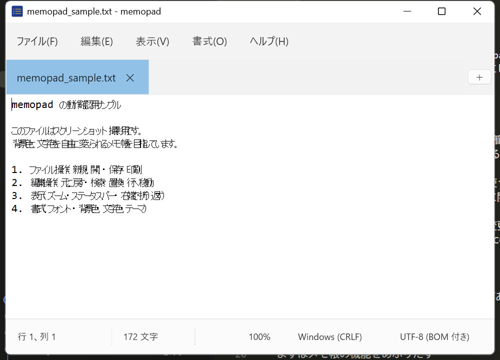
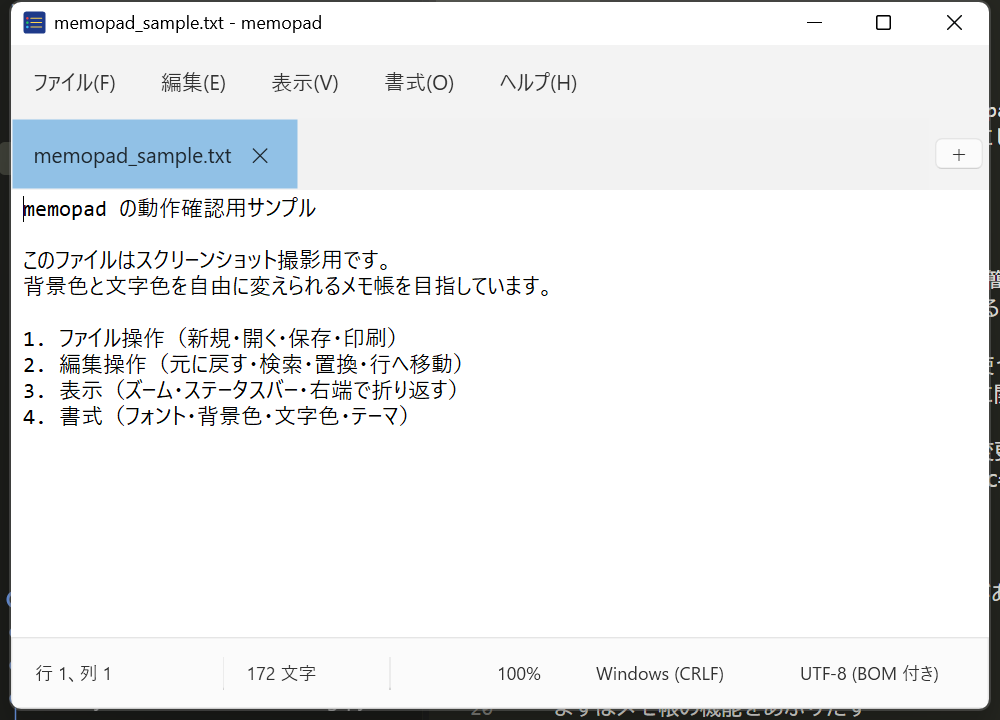
- 本文が透ける。.NET 9 の Fluent テーマはウィンドウ全体を DWM のガラス領域（Mica 背景）にする。GDI で描く RichEdit はアルファ値 0 で描くため、そこが透明扱いになっていた。
DwmExtendFrameIntoClientAreaでフレーム拡張を 0 に戻し、DWMWA_SYSTEMBACKDROP_TYPEを NONE にして、背景色をテーマに合わせて塗った（ThemeService.MakeOpaque）。テーマ切り替え時にも呼び直す。 - 日本語が細い別フォントで出る。Consolas に日本語グリフが無く、GDI のフォント リンクで MS UI Gothic に落ちていた。RichEdit の自動フォント選択（
LanguageOptionの AutoFont＋DualFont）を有効にすると、日本語部分だけ適切なフォントで描かれる。 - ビルドが 1 回おきに失敗する。WPF のマークアップ コンパイル（wpftmp プロジェクト）が
obj内の生成ファイルを見失う。objを消してからビルドすると通るので、確認用の手順はそれに統一した。
2.7 確認
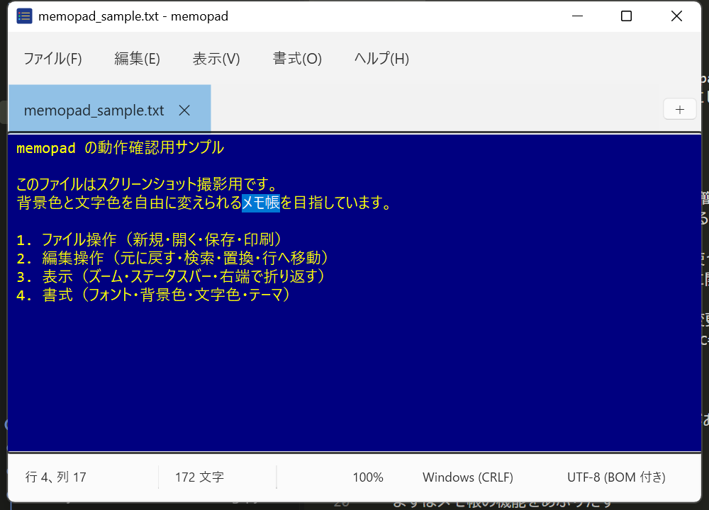
BackColor／ForeColor）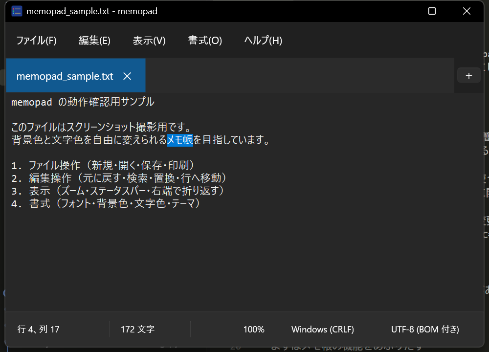
step2 の撮影スクリプト（docs/tools/capture-memopad.ps1）を回帰確認に使い、メニュー・検索／置換・行へ移動・フォント・色・テーマ・タブ・未保存確認・ページ設定・バージョン情報がすべて動くことを確認した。遅延の再計測は表 2-3 の最終行のとおり。
MEMOPAD_PERF=1 を設定して memopad を起動すると %TEMP%\memopad-perf.log にキー押下と本文変更の時刻が記録される。通常起動では何も書かない。
3. FB-2：上部の高さと配置をメモ帳に合わせる（v0.3.0）
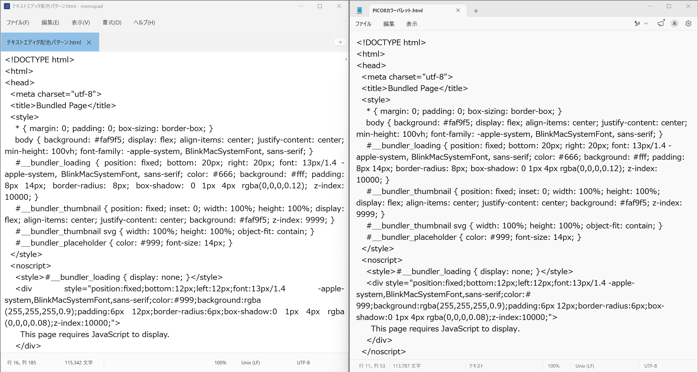
3.1 現象と目標
v0.1.0 は「タイトル バー→メニュー→タブ→本文」の順で、本文が始まるまでがメモ帳より 50 px 以上低い。メモ帳は「タブ（タイトル バーに同居）→メニュー→本文」の順で、＋ボタンは最後のタブのすぐ右にある。フッター（ステータスバー）も memopad のほうが高い。
同じ大きさ（1000×720 物理 px、表示スケール 150 %）で並べて撮り、上端から本文までとステータスバーの高さを画像から測った。
| 項目（論理 px） | メモ帳 | memopad v0.1.0 | memopad v0.3.0 |
|---|---|---|---|
| 上端から本文まで | 75 | 127 | 74 |
| タイトル行（タブを含む） | 41 | 30（標準のタイトル バー）＋ 49（メニュー）＋ 48（タブ） | 42（タブを含む） |
| メニュー行 | 32 | — | 32 |
| ステータスバー | 31 | 47 | 32 |
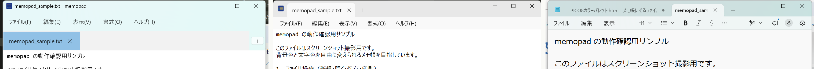
3.2 やったこと
| 項目 | 内容 |
|---|---|
| タイトル バーを自前で描く | WPF の WindowChrome（CaptionHeight=42、UseAeroCaptionButtons=False）で標準のタイトル バーを外し、タイトル行にアイコン・タブ・＋ボタン・最小化／最大化／閉じるボタンを置いた。ボタンのグリフは Segoe Fluent Icons。ダブルクリックで最大化、ドラッグで移動、右クリックでシステム メニューは WindowChrome がそのまま面倒を見る |
| ガラス領域は使わない | GlassFrameThickness=0。ガラス領域があると RichEdit が透ける（2.6 節）。角丸は DWMWA_WINDOW_CORNER_PREFERENCE で DWM に頼む |
| タブの見せ方 | 選択中のタブとメニュー行を同じ色にしてつなげ、タイトル行は少し濃くする（メモ帳と同じ）。Fluent の ListBoxItem は余白が大きいので、タブ用の簡素なテンプレートに差し替えた |
| メニュー行を 32 px に | Fluent の MenuItem は高さ約 58 px あり、Menu の高さを固定すると項目が描画されなくなる。トップ レベルの項目だけ簡素なテンプレート（サブメニューの Popup 込み）にし、サブメニューの項目は Fluent のまま |
| ステータスバーを 32 px に | StatusBarItem の Padding と文字サイズを詰めた |
| 最大化時の余白 | WindowChrome は最大化するとリサイズ枠の分だけ画面外にはみ出すので、最大化中はルートに 7 px の余白を付ける |
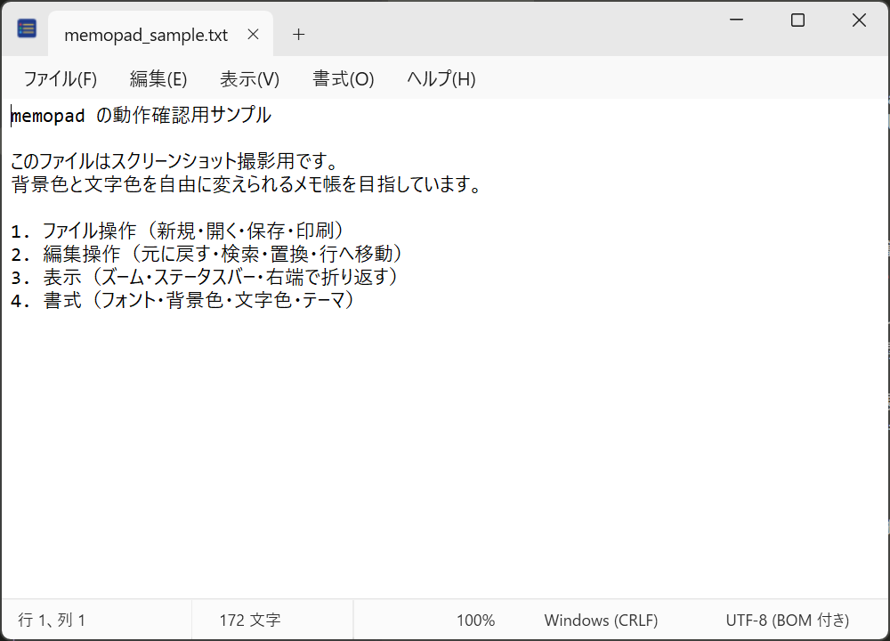
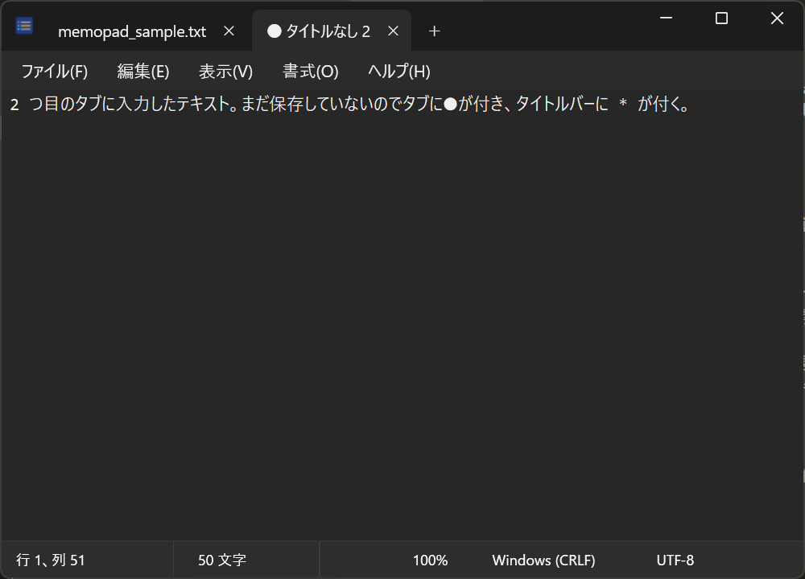
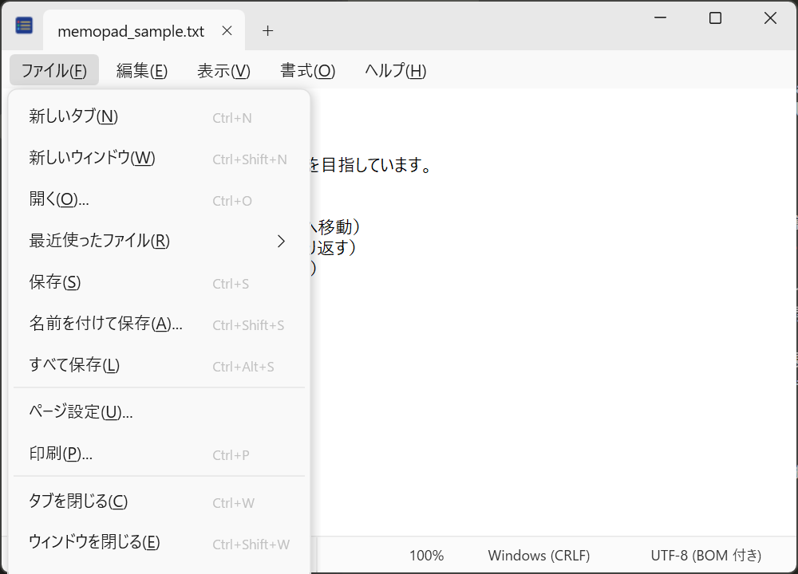
capture-memopad.ps1）は設定を退避してから撮るので、そちらの値を採用した。
4. FB-3：「背景色」「文字色」を「色変更」に統合（v0.4.0）
4.1 現象
v0.1.0 では「書式」メニューに「背景色」「文字色」のサブメニューが別々にあり、どちらも同じ 16 色＋「その他の色」が並んでいた。片方を選ぶたびにメニューを開き直すので使い勝手が悪い、というフィードバック。あわせて 16 色は Windows の基本 16 色から、参照ファイルの PICO-8 パレットに置き替える。
4.2 やったこと
- 「書式」メニューを「フォント」「色変更...」「既定の色に戻す」「テーマ」にした。
- 「色変更」ダイアログ（
Dialogs/ColorChangeDialog.xaml）を新設。左に背景色、右に文字色の 16 色見本（4×4）を置き、それぞれ「その他の色...」から Windows 標準の色の設定ダイアログを開ける。下のプレビューには現在のフォントで見本文を出し、選ぶたびに色が変わる。「既定の色に戻す」もダイアログ内に置いた。OK で反映、キャンセルで元のまま。 - 16 色の定義（
Services/ColorUtil.StandardColors）を PICO-8 の番号順に置き替えた。名前は日本語。 - 撮影スクリプトは、見本ボタンに付けた UI Automation の名前（例「濃い青 #1D2B53」）で色を選ぶように変えた。
| 番号 | 名前 | 色 | 番号 | 名前 | 色 |
|---|---|---|---|---|---|
| 0 | 黒 | #000000 | 8 | 赤 | #FF004D |
| 1 | 濃い青 | #1D2B53 | 9 | オレンジ | #FFA300 |
| 2 | 濃い紫 | #7E2553 | 10 | 黄 | #FFEC27 |
| 3 | 濃い緑 | #008751 | 11 | 緑 | #00E436 |
| 4 | 茶 | #AB5236 | 12 | 青 | #29ADFF |
| 5 | 濃い灰 | #5F574F | 13 | 藍 | #83769C |
| 6 | 明るい灰 | #C2C3C7 | 14 | ピンク | #FF77A8 |
| 7 | 白 | #FFF1E8 | 15 | 桃 | #FFCCAA |
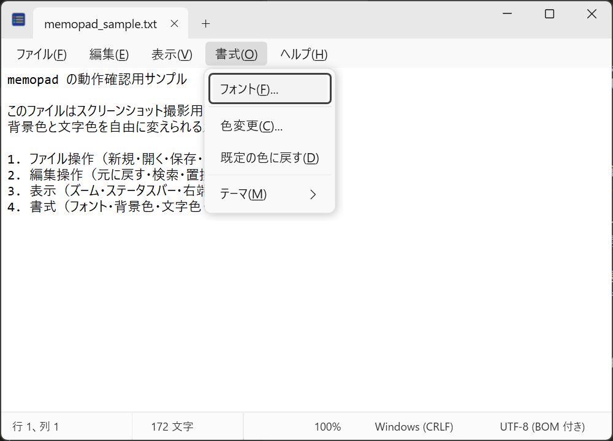
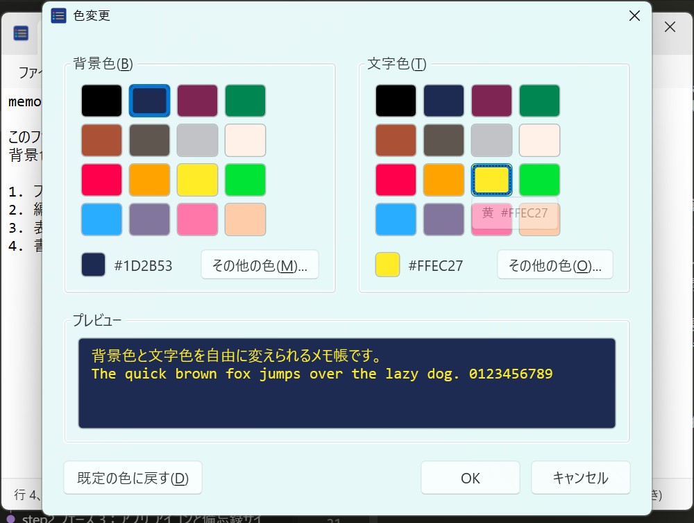
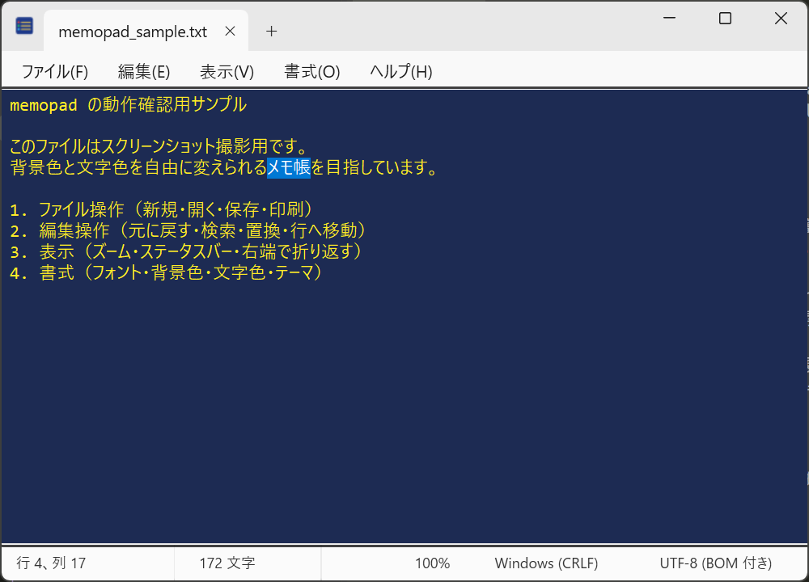
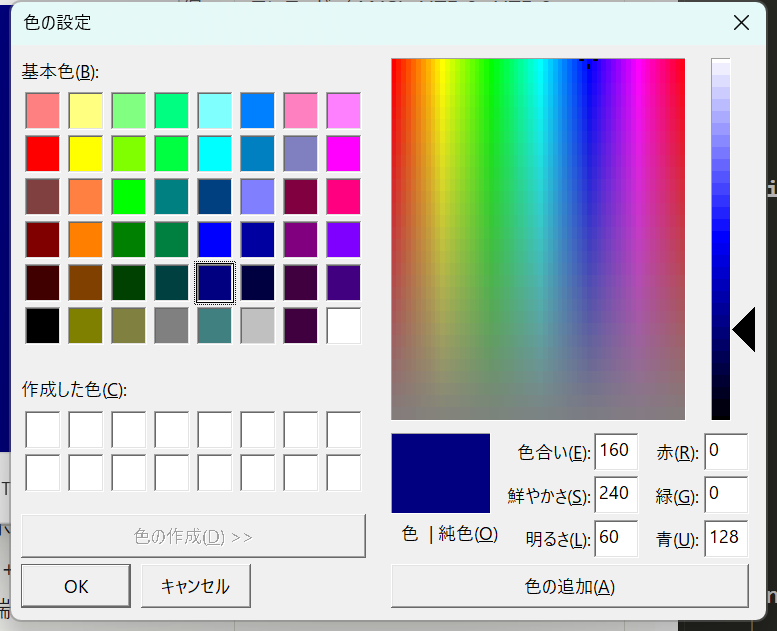
5. FB-4：目に優しい配色 16 パターン（v0.5.0）
5.1 要望
テーマのように全体の配色をまとめて変える機能として、目に優しい配色 16 パターン（参照ファイル「テキストエディタ配色パターン」）を用意し、プレビューを見て選べる方式にしてほしい、というフィードバック。背景色と文字色を一度に変える。
5.2 やったこと
- 「書式」メニューに「配色パターン...」を追加（「色変更...」の下）。
- 「配色パターン」ダイアログ（
Dialogs/ColorSchemeDialog.xaml）を新設。ライト 8 種・ダーク 8 種をカードで並べ、各カードはそのパターンの背景色の上に名前（アクセント色）・見本文（文字色）・色コードを出す。クリックで選ぶと下のプレビューが現在のフォントで切り替わり、OK で本文に反映する。 - 16 パターンの定義は
Services/ColorSchemes.cs。現在の背景色・文字色に一致するパターンがあれば、開いたときにそのカードが選択済みになる。 - 反映後は設定の背景色・文字色に色コードとして保存されるので、「色変更...」で片方だけ変えることもできる。
16 パターン（HTML で再現したもの。名前はアクセント色、色コードは背景 / 文字）：
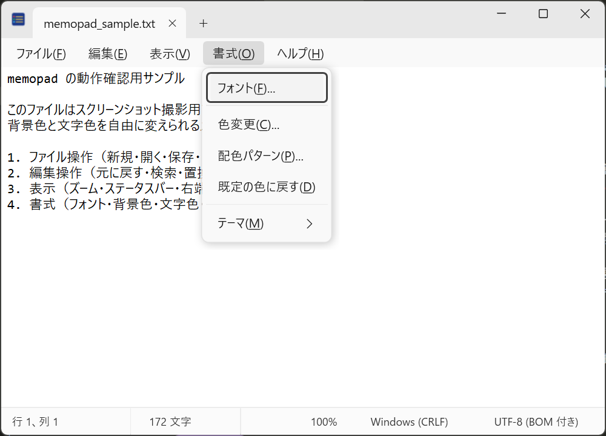
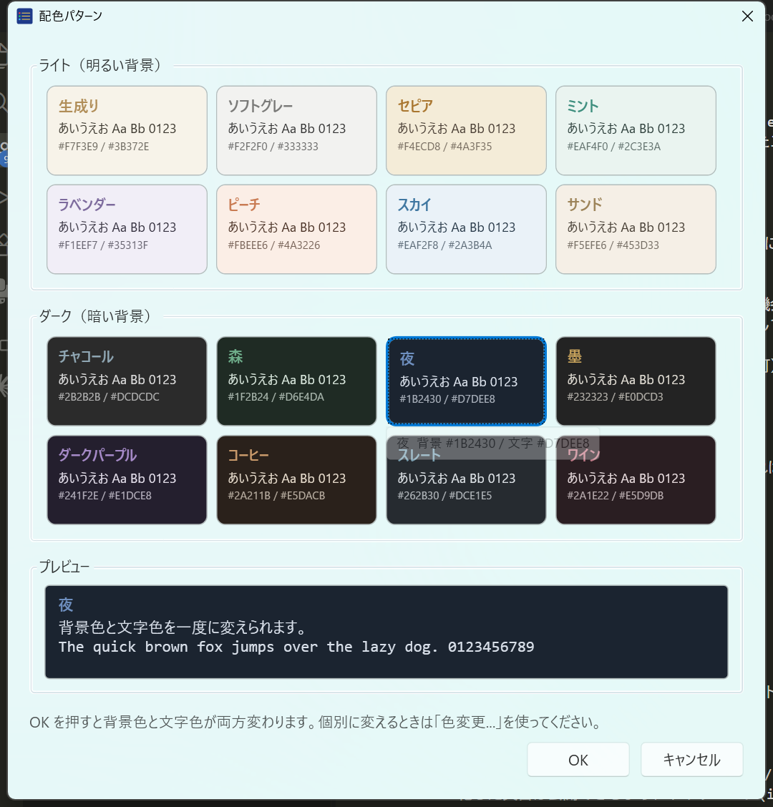
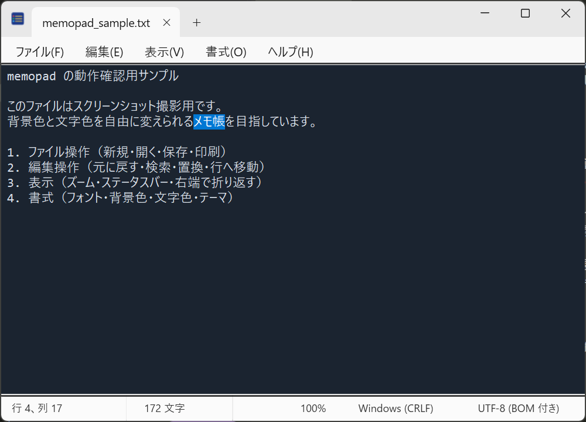
6. FB-5：タブをクリックしても切り替わらない（v0.5.1）
6.1 現象
v0.5.0 をインストールして確認中、タブをクリックしても切り替わらない。メニューと文字入力は動く。Ctrl+Tab やプログラムからの切り替え（新しいタブを開いたとき）は動いていたため、撮影スクリプトの確認では気づけなかった。
6.2 原因
v0.3.0 でタブ用に差し替えた ListBoxItem のスタイルに Focusable=False を付けていた。WPF の ListBoxItem はマウスで押されたとき、まず自分にフォーカスを移し、それが成功したときだけ選択処理を行う。フォーカスを取れない設定にしたことで、クリックしても選択されなくなっていた（フォーカスが本文から離れないように、という意図だったが逆効果）。
6.3 対処と確認
Focusable=Falseを外した。選択後は従来どおり本文へフォーカスを戻す（SelectTab→FocusEditor）。- 再発防止に
docs/tools/test-tabclick.ps1を追加した。memopad を起動して Ctrl+N でタブを 2 つにし、UI Automation で取ったタブの位置を実際にマウスでクリックして、ウィンドウ タイトルの切り替わりとその後のキー入力が本文に届くことを確かめる。起動中の他の memopad には触れず、自分で起動した PID だけを扱う。
| 操作 | v0.5.0（インストール済み） | v0.5.1 |
|---|---|---|
| Ctrl+N でタブ追加 | *タイトルなし 2 に切り替わる | 同じ |
| 1 つ目のタブをクリック | 切り替わらない（*タイトルなし 2 のまま） | タイトルなし に切り替わる |
| 2 つ目のタブをクリック | — | *タイトルなし 2 に切り替わる |
| クリック後にキー入力 | 本文に入る | 本文に入る（abc → abcxyz） |
7. FB-6〜8：表示の細かな崩れ 3 件（v0.5.2）
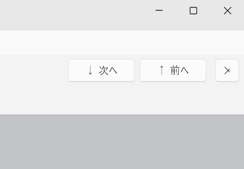
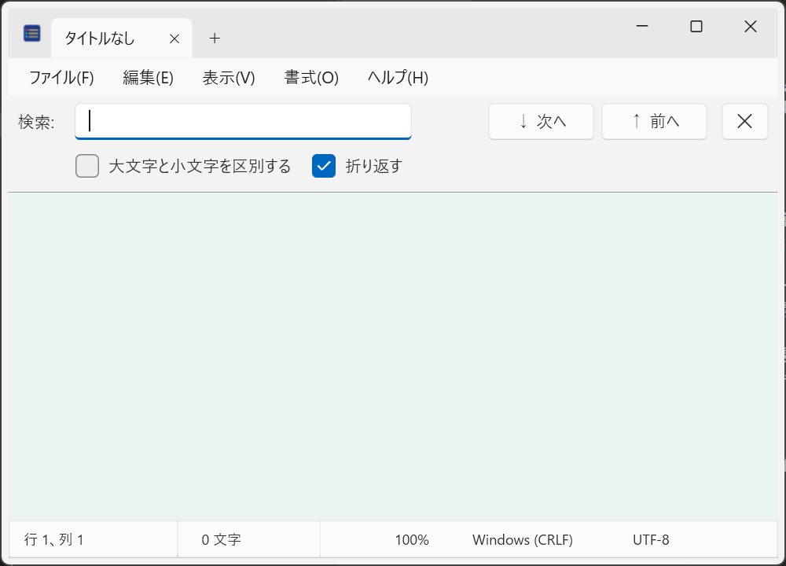
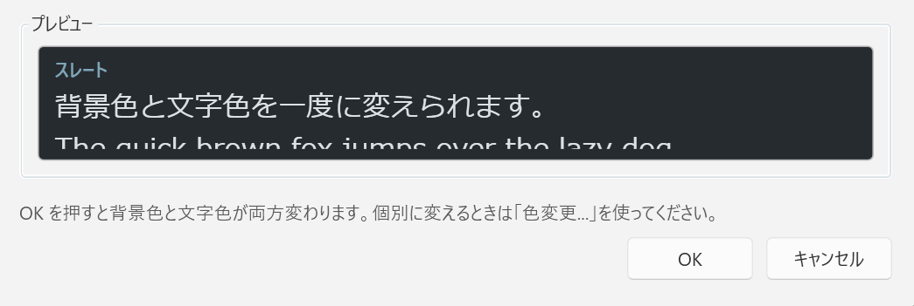
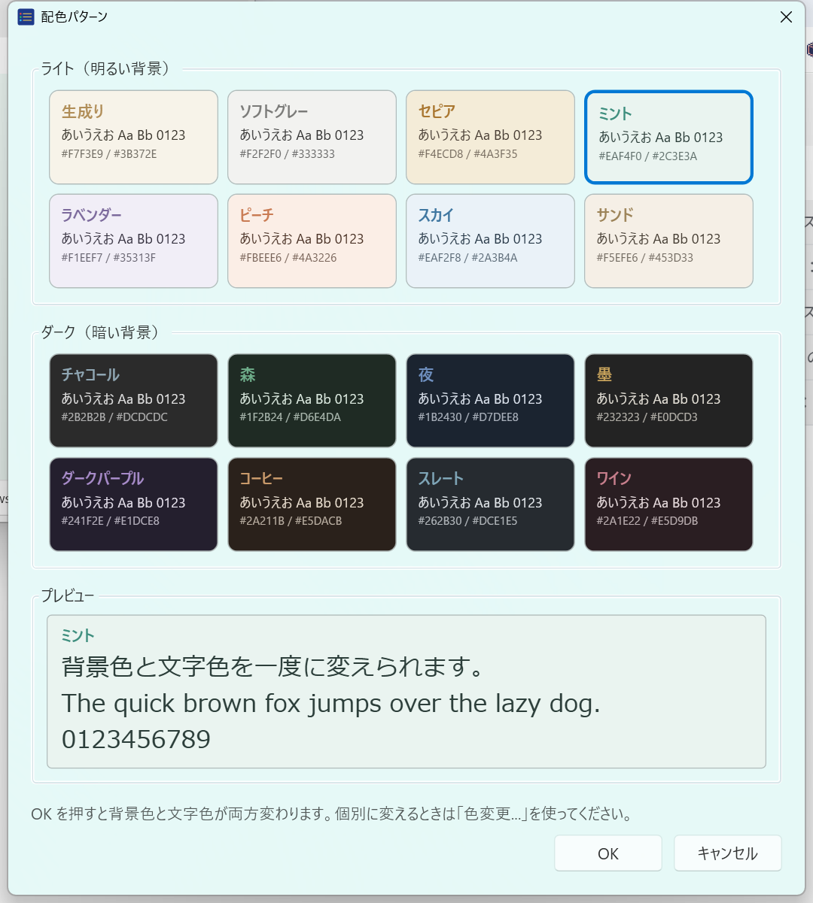
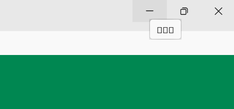
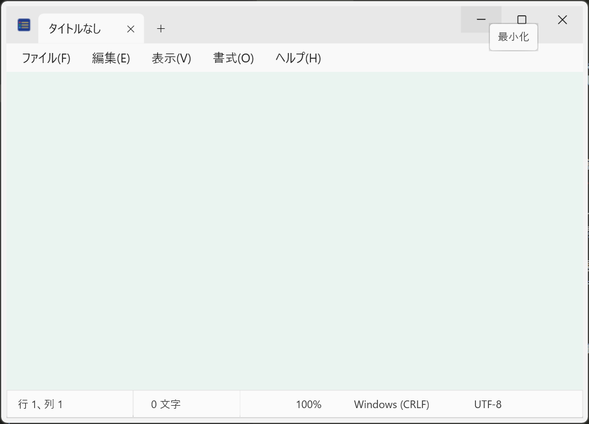
8. FB-11：起動がメモ帳よりワンテンポ遅い（v0.7.0）
8.1 現象と測り方
メモ帳を起動するとすぐウィンドウが出るのに、memopad は一呼吸置いてから出る。FB-1 と同じく、まず数値にした。docs/tools/measure-startup.ps1 は対象を起動し、別プロセスから 1 ms 間隔で (1) 対象プロセスの可視ウィンドウが現れるまで、(2) 画面のピクセル（本文中央とタイトル行）の色が変わらなくなるまで、を測る。8 回起動して 1 回目（コールド）を除いた中央値を採る。
| 対象 | ウィンドウ表示まで | 描画完了まで |
|---|---|---|
| メモ帳（Windows 11 の Store 版） | 約 200 ms | 約 300 ms |
| memopad v0.6.0 | 約 520〜550 ms | 約 650 ms |
ウィンドウが出るまでで 2.5 倍以上、300 ms 以上の差がある。これが「ワンテンポ」の正体。
8.2 起動処理の内訳
環境変数 MEMOPAD_PERF=1 で有効になる診断ログ（Services/PerfLog.cs）に、プロセス起動からの経過時間を段階ごとに記録する Mark を足した。温まった状態（2 回目以降）の v0.6.0 の内訳は次のとおり。
特定の 1 か所が遅いのではなく、WPF の固定費が薄く広く積み上がっている。dotnet-trace で JIT イベントを数えると、起動中に 1,523 メソッドが JIT コンパイルされていた（P/Invoke の呼び出しスタブ約 560、ジェネリック型の実体化約 470、memopad 自身のコード約 150）。同梱の .NET ランタイムは事前コンパイル（ReadyToRun）済みだが、スタブと実体化は実行時に作られる。
8.3 試したことと効果
| 試したこと | 効果（ウィンドウ表示まで） | 採否 |
|---|---|---|
アプリ本体の ReadyToRun 発行（PublishReadyToRun） | 約 10 ms 短縮 | 採用（無害） |
フレームワークまで一体で事前コンパイルする複合 ReadyToRun（PublishReadyToRunComposite） | 温まった状態で約 40 ms 短縮。ただしインストール直後の初回起動が 1.2 秒 → 4.3 秒に悪化（100 MB 超の一体イメージをウイルス対策がスキャンする）、容量 +20 MB | 不採用 |
| Fluent テーマを外す（旧来の Aero2 テーマ） | 約 60 ms 短縮。見た目（ダーク テーマ、Windows 11 風のメニュー）を失う | 不採用 |
| ランタイムのオプション（TieredPGO 無効、並行 GC 無効） | 差なし | — |
WPF の描画をソフトウェアにする（RenderMode.SoftwareOnly） | Direct3D デバイスの生成（約 80 ms）が消え、描画完了が約 50 ms 早まる。memopad の WPF 部分はタイトル行・メニュー・ステータスバーだけで本文は GDI の RichEdit なので、見た目・速度に差は出ない | 採用 |
設定 JSON をソース ジェネレーターで変換（JsonSerializerContext） | 31 ms → 18 ms | 採用 |
Windows Forms／msftedit.dll／System.Drawing／Fluent のアセンブリを別スレッドで先読み（Services/StartupWarmup.cs） | 約 10 ms 短縮（CPU の空いているコアで並列に読み込む） | 採用 |
| フォント（Yu Gothic UI、Segoe Fluent Icons）の別スレッド先読み | 差なし | 不採用 |
| メニュー項目の遅延生成 | メニュー部分の XAML 読み込みは 11 ms しかなく、作り込む価値なし | 不採用 |
8.4 v0.7.0 の結果
| 対象 | ウィンドウ表示まで（中央値） | 描画完了まで（中央値） |
|---|---|---|
| メモ帳 | 205 ms | 約 300 ms |
| memopad v0.6.0 | 521 ms | 669 ms |
| memopad v0.7.0 | 505 ms | 619 ms |
描画完了は 50 ms 早くなったが、ウィンドウが出るまでは 16 ms しか縮まらず、体感はほぼ変わらない。WPF のまま「メモ帳並み」にはできなかった。
8.5 WPF の下限と Windows Forms との比較
どこまで縮められるかを知るため、最小構成のアプリを同じ条件（self-contained 発行、同じ端末）で測った。
- WPF は空に近いウィンドウでも約 400 ms かかる。ランタイム起動 60 ms ＋ WPF Application 初期化 80 ms ＋ XAML／テンプレート／HWND 生成／Direct3D／初回描画で、memopad の機能を削っても 400 ms を下回れない。メモ帳の 200 ms は WPF の構造上届かない。
- Windows Forms なら約 160 ms で、メモ帳より速い。本文の RichEdit はすでに Windows Forms のコントロールなので、メイン ウィンドウ（タイトル行のタブ、メニュー、検索バー、ステータスバー）を Windows Forms で作り直せば、起動はメモ帳並みになる見込み。ダイアログ類は WPF のまま残しても、開くときに初めて WPF を初期化すればよい。
9. Windows Forms への作り直しと MemoPad への改名（v0.8.0）
9.1 方針：本文はそのまま、ガワだけ載せ替える
本文の編集領域はもともと Windows Forms のコントロール（RichEdit を継承した Views/PlainTextEdit.cs）で、v0.2.0 以降それを WPF の WindowsFormsHost に埋めて使っていた。つまり いちばん重要な部分は最初から Windows Forms で、WPF はその周り（タイトル行・メニュー・検索バー・ステータスバー）を描くためだけに 400 ms を払っていたことになる。そこで周りだけを Windows Forms に載せ替えた。
9.2 作ったもの
| ファイル | 役割 |
|---|---|
Program.cs | 入口。App.xaml をやめ、WPF に触れずに設定を読んでフォームを出す |
Views/MainForm.cs | メイン ウィンドウ。WM_NCCALCSIZE で標準のタイトル バーと枠を外し、WM_NCHITTEST でリサイズとドラッグ移動を自分で答える |
Views/TitleBar.cs | タイトル行。タブ（TabButton）と＋・最小化・最大化・閉じるを並べる |
Views/FluentMenuRenderer.cs | MenuStrip を Windows 11 風に描く（角丸のホバー、薄い枠線、チェックと右矢印は Segoe Fluent Icons） |
Views/StatusBarPanel.cs | ステータスバー。改行コードとエンコードはクリックでメニューを出す |
Views/MainForm.Menu.cs / MainForm.Find.cs | メニューと右クリック メニュー／検索・置換バー |
Services/WpfHost.cs | WPF のダイアログを遅延初期化する。起動時は読み込まず、最初にダイアログを開くときだけ WPF を立ち上げる |
Services/ThemeService.cs | Fluent テーマ（ThemeMode）の代わりに、ライト／ダークの配色を ThemePalette として自前で持つ |
消したのは App.xaml、MainWindow.xaml（と分離コード）、EditorView.xaml、Commands.cs、値コンバーター 2 つ。ダイアログ 7 種は WPF のまま、オーナーだけ Window からウィンドウ ハンドルに変えて流用した。
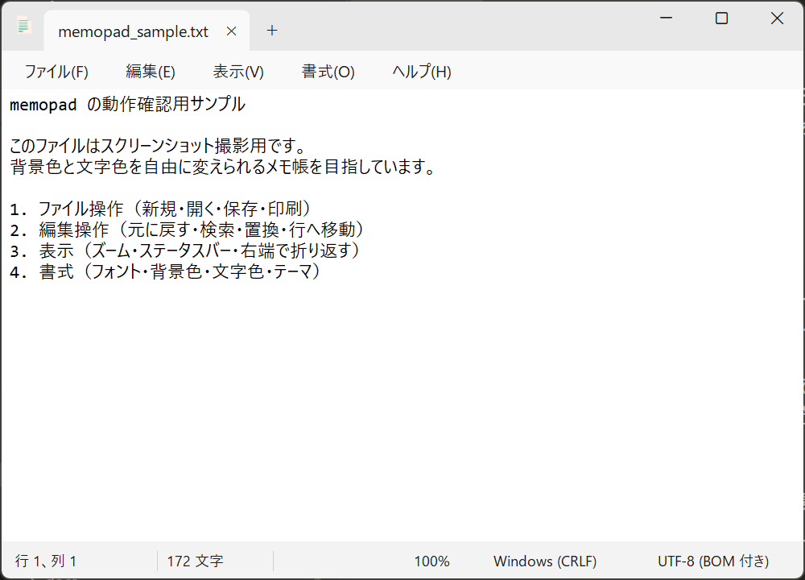
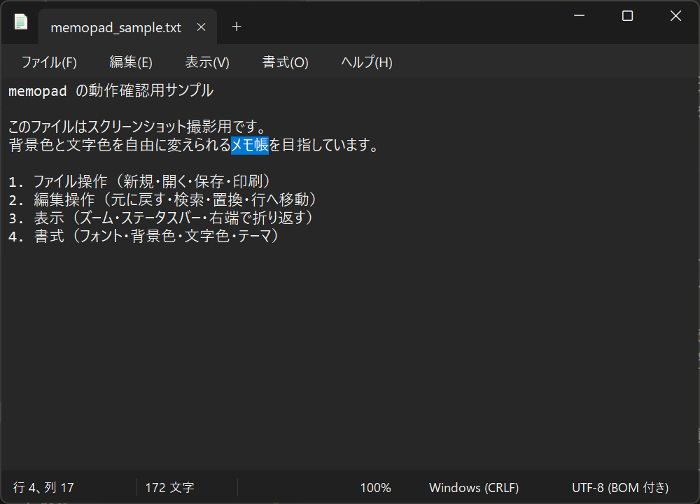
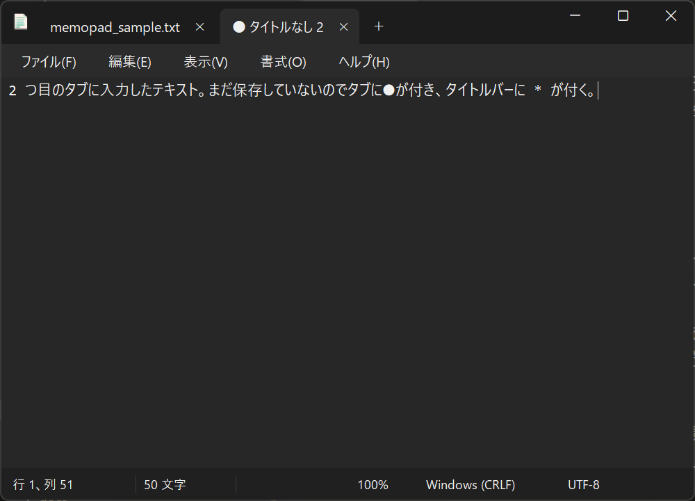
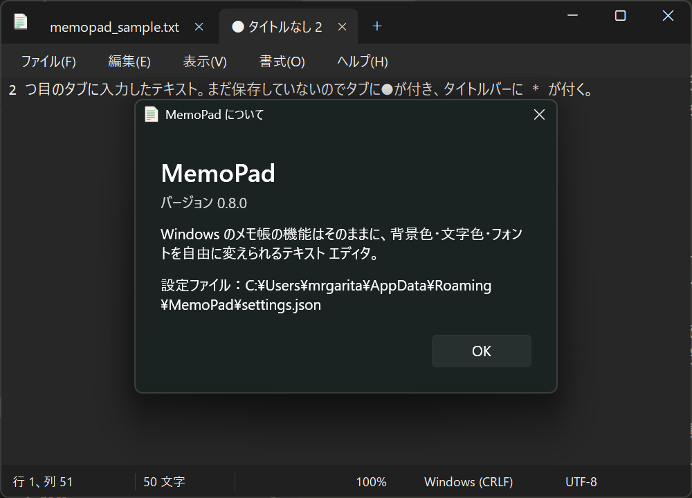
9.3 つまずいた点
| 症状 | 原因と対処 |
|---|---|
| タブが支援技術（スクリーン リーダー）から見えない | 最初はタイトル行を 1 枚のコントロールに自前描画し、AccessibleObject の子として公開したが、UI Automation には名前の無い枠としてしか出なかった（Windows Forms の素の Control は子要素を UI Automation へ渡さない）。タブとボタンを Button を継承した実体のあるコントロールに変え、AccessibleName と AccessibleRole を付けたら、名前・位置・クリックがそのまま伝わるようになった。FB-5 で作ったタブ クリックの確認スクリプトもこれで動く |
| 選択中のタブだけ×が消える | タブの背景を×より後に描いていた。タブをすべて描いてから×を描く順に変えた |
| ステータスバーのメニューを閉じると落ちる | Closed イベントの中で ContextMenuStrip を Dispose していた。後始末が破棄済みのオブジェクトに触れて例外になる。BeginInvoke でメッセージを処理し終えてから捨てるようにした |
| エンコードのメニューが画面からはみ出す | 項目の左端を基準に右へ開いていた。右端を基準に左へ開くようにした |
| 最大化するとウィンドウが画面外へはみ出す | WM_NCCALCSIZE で枠を外すと、最大化時は見えない枠の分だけ外へ出る。GetSystemMetricsForDpi で枠の太さを取り、その分だけ内側に寄せた |
| 撮影スクリプトでメニューの ESC が効かない | Windows Forms のメニューは ESC 1 回ではメニュー モードを抜けない（1 回目でドロップダウン、2 回目で選択解除）。スクリプト側を ESC 2 回に直した。あわせて、撮影前にマウス カーソルを画面の隅へ寄せてツールチップの写り込みを防ぐようにした |
9.4 結果
| 対象 | ウィンドウ表示まで（中央値） | 描画完了まで（中央値） |
|---|---|---|
| メモ帳（Windows 11 の Store 版） | 211 ms | 467 ms |
| MemoPad v0.6.0（WPF） | 521 ms | 669 ms |
| MemoPad v0.7.0（WPF＋短縮策） | 505 ms | 619 ms |
| MemoPad v0.8.0（Windows Forms） | 221 ms | 332 ms |
ウィンドウが出るまでは 505 ms → 221 ms と 2.3 倍速くなり、メモ帳（211 ms）に並んだ。本文が描き終わるまでは 332 ms で、メモ帳（467 ms）より速い。step1 で洗い出した機能はすべて動くことを、撮影スクリプト（docs/tools/capture-memopad.ps1）とタブ クリックの確認スクリプトで確かめている。
9.5 FB-12：MemoPad への改名と新しいアイコン
FB-11 が達成できたので、名称を memopad から MemoPad に改め、アイコンをユーザー提供の新デザイン（クリーム色の文書に緑の罫線）に差し替えた。
| 対象 | 変更 |
|---|---|
| 実行ファイル | memopad.exe → MemoPad.exe（AssemblyName） |
| 画面の表示 | タイトル バー、メニューの「MemoPad について」、各ダイアログの見出しとメッセージ |
| 設定の保存先 | %APPDATA%\MemoPad\settings.json（Windows のパスは大文字小文字を区別しないので、これまでの設定はそのまま引き継がれる） |
| インストーラ | アプリ名・ショートカット・関連付けの表示名、出力ファイル名 MemoPad-setup-0.8.0.exe |
| アイコン | src/memopad/memopad.ico（16〜256 px の 6 サイズ）と、紹介ページ用の PNG・favicon |
リポジトリ名・フォルダー名・名前空間（Memopad）はそのままにした。GitHub の URL が変わると既存のリンクが切れるうえ、識別子は英語のままという方針に沿うため。
10. FB-13：タイトル行でウィンドウを動かせない（v0.9.0）
10.1 現象
v0.8.0 をインストールしたユーザーから「ウィンドウ上部のドラッグでの移動ができなくなっている。ウィンドウ上部をダブルクリックした際のウィンドウ サイズ変更もできない」というフィードバックを受けた。v0.7.0（WPF）までは普通にできていた操作で、Windows Forms への作り直しで持ち込んだ不具合。手元で調べたところ、ウィンドウの四辺をドラッグしてのリサイズも同じ原因で効かなくなっていた（フィードバックには挙がっていなかったが、あわせて直した）。
10.2 原因：当たり判定を子コントロールが横取りしていた
MemoPad は標準のタイトル バーを WM_NCCALCSIZE で外し、「ここはタイトル行（HTCAPTION）」「ここは左の縁（HTLEFT）」といった判定を MainForm が WM_NCHITTEST で答えている。ところが Windows は、その座標にある いちばん手前の子ウィンドウ に当たり判定を尋ねる。v0.7.0 までの WPF はウィンドウ全体が 1 つの HWND だったので親がそのまま答えられたが、Windows Forms はコントロールごとに HWND があるため、タイトル行を覆う TitleBar、四辺を覆う RichEdit やステータスバーが「ここは普通のクライアント領域（HTCLIENT）」と答えてしまい、親の答えは使われない。
どのウィンドウにマウス入力が届くかは WindowFromPoint で調べられる。v0.8.0 では、フォーム自身は正しく答えているのに、入力先はすべて子コントロールだった。
| 位置 | フォームの答え | 入力が届く先（v0.8.0） | 子の答え（v0.9.0） |
|---|---|---|---|
| タイトル行の空き | HTCAPTION（2） | TitleBar | HTTRANSPARENT（-1） |
| 左右の縁 | HTLEFT / HTRIGHT（10 / 11） | RichEdit | HTTRANSPARENT（-1） |
| 下の縁 | HTBOTTOM（15） | ステータスバー | HTTRANSPARENT（-1） |
| タブ・ボタンの上 | HTCLIENT（1） | TabButton | HTCLIENT（1）＝今までどおり |
10.3 直し方：子から HTTRANSPARENT を返す
Views/ChromeHitTest.cs を追加した。子コントロールが WM_NCHITTEST を受け取ったら、その座標を親フォームに聞き返し（MainForm.IsWindowFrameAt）、タイトル行の空きかウィンドウの縁だったら HTTRANSPARENT（自分は透明。下のウィンドウに聞いてほしい、という意味）を返す。すると判定が親へ落ち、ドラッグ移動・ダブルクリックでの最大化／復元・スナップ・右クリックのシステム メニュー・四辺のリサイズを、いつもどおり Windows が処理してくれる。タブや＋ボタンの上は今までどおり子が受け取るので、クリックの動作は変わらない。
| 直したコントロール | 覆っていた場所 |
|---|---|
TitleBar（タブとキャプション ボタンを含む） | タイトル行全体、上端と右上隅 |
PlainTextEdit（RichEdit） | 本文が届く左右の縁 |
StatusBarPanel | 下の縁と左右の下隅 |
ChromeMenuStrip / ChromePanel（メニュー・検索バー・本文の入れ物） | 左右の縁 |
10.4 確かめ方
UI Automation では「マウスで掴んで動かす」操作を再現できないので、mouse_event で実際にドラッグとダブルクリックを行い、ウィンドウの位置とサイズが期待どおり変わるかを確認した（タブのクリック不具合〈FB-5〉を撮影スクリプトで見逃した反省から、v0.5.1 以降は実操作での確認を必ず 1 つ用意している）。
| 操作 | 期待 | v0.9.0 の結果 |
|---|---|---|
| タイトル行の空きをドラッグ | ウィンドウが同じ量だけ動く | (+120, +60) の操作で (+120, +60) 移動 |
| タイトル行をダブルクリック | 最大化する | 最大化した |
| 最大化中にもう一度ダブルクリック | 元のサイズに戻る | 戻った |
| 右の縁を +100 ドラッグ | 幅が 100 増える | 1000 → 1100 |
| 下の縁を +80 ドラッグ | 高さが 80 増える | 700 → 780 |
11. FB-14・FB-15：メニューの見た目（v0.9.0）
11.1 FB-14：「MemoPad について(A)」の (A)
(A) は About（バージョン情報）の頭文字を割り当てたアクセス キーの表記で、日本語版のメモ帳も「メモ帳について(A)」と出す昔からの決まり。Alt→H→A でダイアログが開く。他の項目（終了(X)、保存(S) など）とも揃っているので、そのままにした。
11.2 FB-15：字下げが広すぎる／文字が上付き
「サブメニューの文字列がやや上付きでバランスが悪い」「メニューからサブメニューが字下げで表示されるが、字下げの幅が文字 2 文字分ほどあり右寄りすぎる」というフィードバック。メモ帳のメニューと並べて、ポップアップの左端から文字までの距離と、項目の中心に対する文字の上下位置を実測した（表示スケール 150 %、単位は実ピクセル）。
| 項目 | メモ帳 | MemoPad v0.8.0 | MemoPad v0.9.0 |
|---|---|---|---|
| 字下げ（チェックの無いメニュー） | 約 21 px | 54 px | 17 px |
| 字下げ（チェックの付くメニュー） | 約 58 px | 54 px | 50 px |
| 項目の中心と文字の中心のずれ | ほぼ 0 | 5.5 px 上 | 1.5 px 下 |
| 項目の高さ | 50 px | 48 px | 48 px |
原因は 2 つあった。
- 字下げ：Windows Forms のポップアップ メニュー（
ToolStripDropDownMenu）は、チェックやアイコンを置く欄（16 px＋余白）を既定で常に空ける。MemoPad はメニューにアイコンを使わないので、チェックの付く項目が 1 つも無いファイル・編集メニューでも欄だけが残り、字下げが全角 2 文字分になっていた。メモ帳（Windows 11 の新しいメニュー）は、チェックの付く項目があるメニューだけ字下げを深くしている。同じ考え方にして、チェックが付き得る項目のあるメニューだけShowImageMarginを有効にした（表示メニュー、テーマ、ステータスバーの改行コード／エンコード）。 - 上付き：既定のレイアウトでは、文字が項目の高さの中央より上に置かれる。
FluentMenuRenderer.OnRenderItemTextで、文字を描く矩形を項目の高さいっぱいに広げ、上下中央（TextFormatFlags.VerticalCenter）で描くようにした。
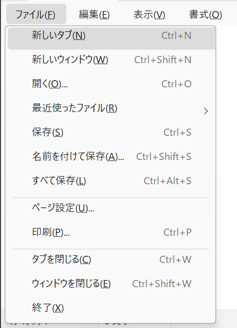
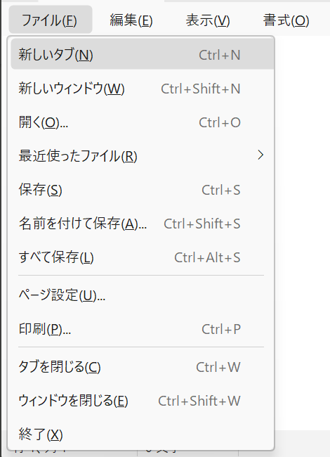
12. つまずいた点のメモ
- 体感の遅さは、まず数値にする。アプリ内部のログだけ見ると「速い」と結論しかねなかった。画面のピクセルが変わるまでを別プロセスから測って初めて、メモ帳との差（19 ms 対 50 ms）が見えた。
- PowerShell 5.1 は
$nullを文字列引数に渡すと空文字になる。FindWindow($null, "title")がクラス名 "" で検索して失敗した。[NullString]::Valueを渡す。 - PowerShell の
-WindowStyle Hiddenは子の Windows Forms フォームまで隠す。計測用のホスト ウィンドウが出ず、しばらく原因が分からなかった。 - スクリプト ファイルは BOM 付き UTF-8 で保存する。BOM 無しだと PowerShell 5.1 が ANSI として読み、日本語のコメントで構文が壊れる。
- ビルドが 1 回おきに失敗する原因はビルド サーバーだった。前回の MSBuild ノードや VBCSCompiler が
objの生成ファイルを掴んだままになる。dotnet build-server shutdownしてから-nodeReuse:false -p:UseSharedCompilation=falseでビルドすると安定した。 - Fluent の MenuItem は高さを縛ると消える。Menu に
Height=30を付けただけで項目が描画されなくなった。テンプレートを差し替えるのが確実。 - 撮影スクリプトはプログラムからの操作が多く、マウス操作の不具合を見逃す。タブの切り替えは UI Automation の Invoke や SelectedItem の設定では動いてしまう。ユーザーが実際に行う操作（マウス クリック）そのものを再現する確認を、機能ごとに 1 つは持つ。
- 表示スケールを決め打ちしない。この端末は 150 % で、125 % と思い込んで換算した値が合わなかった。
GetDpiForSystemで確かめてから換算する。 - 起動時間は「どこか 1 か所」ではなく積み上げで決まる。段階ごとの経過時間を記録して初めて、WPF の固定費が全体の 8 割を占めると分かった。最小構成のアプリで下限を測るのが早道だった。
- 複合 ReadyToRun は初回起動を測ってから採用を決める。温まった状態の数字だけ見ると速いが、新規コピー（インストール直後相当）の初回起動は 3 秒以上悪化した。
- dotnet-trace は対象を強制終了するとトレースが途中で切れる。JIT イベントの集計はできたが、CPU サンプリングはスタックが解決できず使えなかった。対象が自分で終了する形にする。
- 速くするより先に、どこまで速くできるかの下限を測る。最小構成の WPF（約 400 ms）と Windows Forms（約 160 ms）を作って比べたことで、「WPF のままでは無理」と早く結論でき、作り直しの判断材料になった。
- 自前のタイトル バーは、子コントロールが当たり判定を横取りする。親フォームが
WM_NCHITTESTで HTCAPTION と答えても、その座標に子ウィンドウがあると Windows は子に尋ねる。1 枚の HWND で描く WPF から、コントロールごとに HWND を持つ Windows Forms に移ると必ず踏む。子からHTTRANSPARENTを返して親へ譲る。 - ウィンドウの移動・リサイズは実際のマウス操作で確かめる。
WindowFromPointは HTTRANSPARENT を無視して子ウィンドウを返すので、これだけでは直ったか分からない。mouse_eventでドラッグして、ウィンドウの位置とサイズの変化を見るのが確実。 - ToolStripMenuItem の
Paddingは左右が効かない。メニュー項目の字下げを変えようと 4 → 13 → 40 px と変えても文字の位置は 1 px も動かなかった（効くのは上下＝項目の高さだけ）。左右はポップアップ側のアイコン欄（ShowImageMargin）と内部レイアウトが決めている。値を変えて撮影・実測する確認を挟まないと、効かない設定をそれらしいコメント付きで残してしまう。 - 自前描画はアクセシビリティを落とす。1 枚のコントロールに描いたタブは、見た目は同じでも支援技術からは何も見えない。実体のあるコントロール（
Button継承）にすると標準の仕組みに乗る。